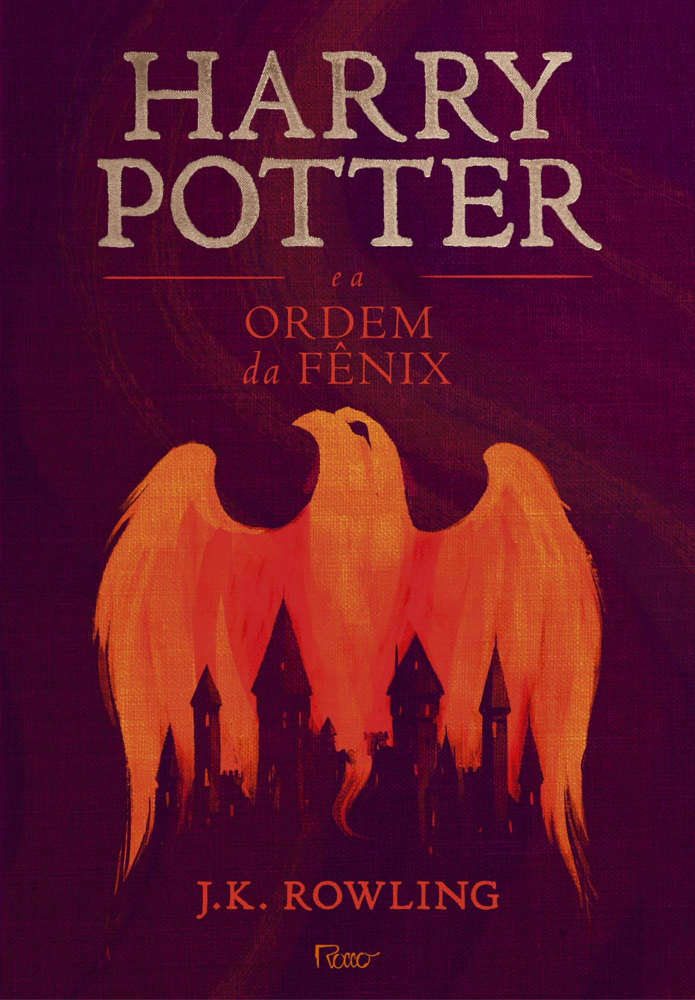
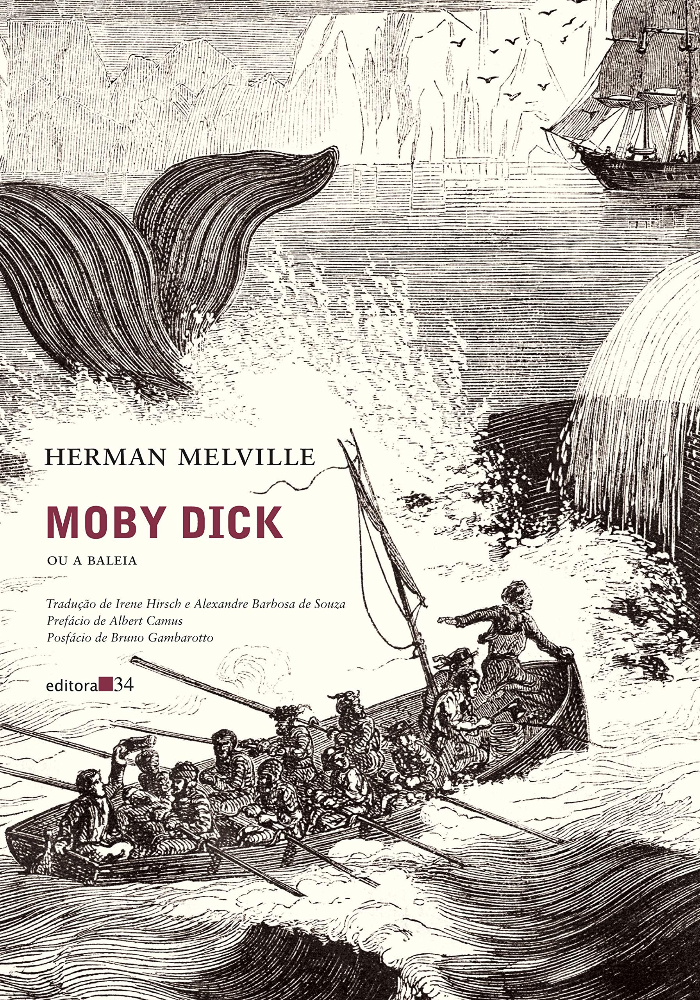
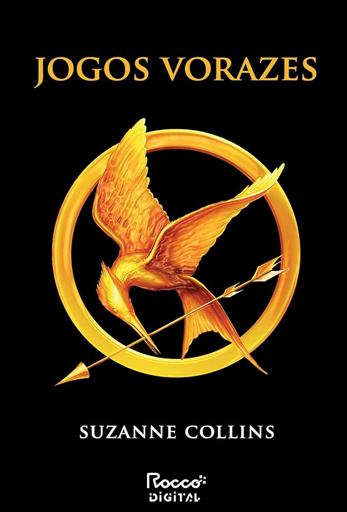
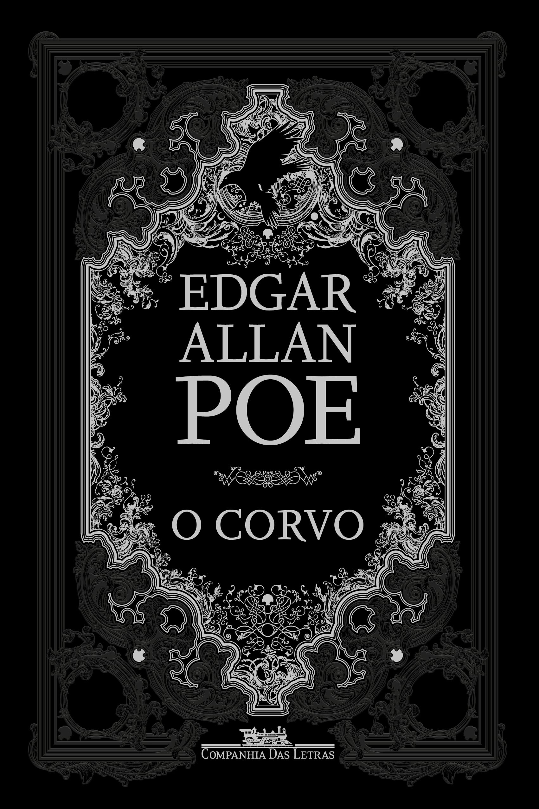
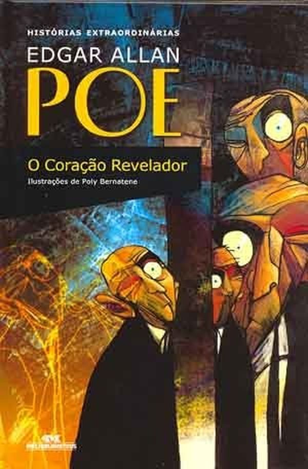
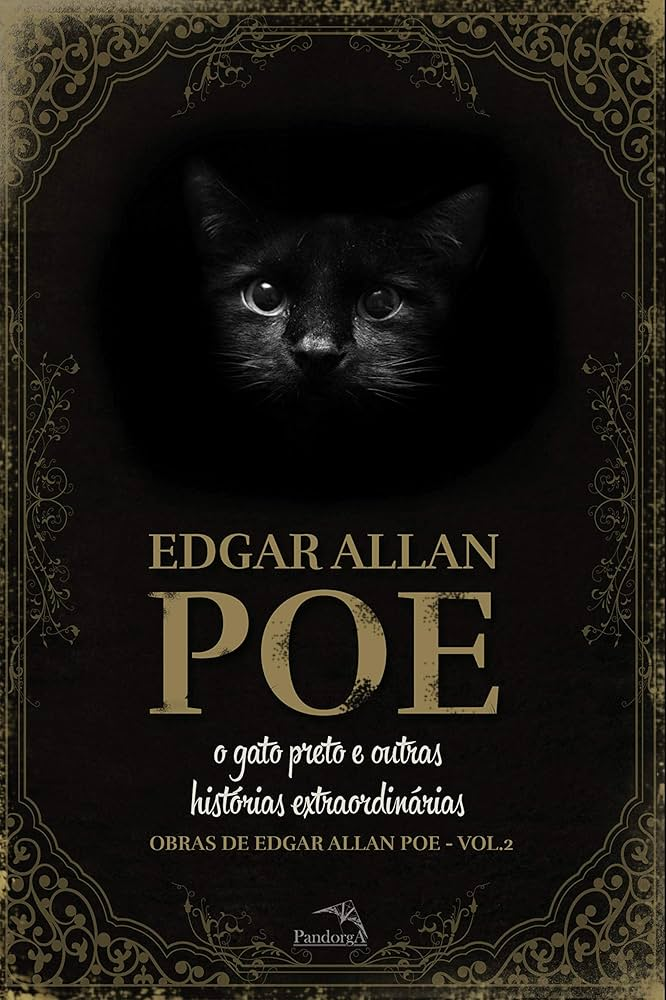
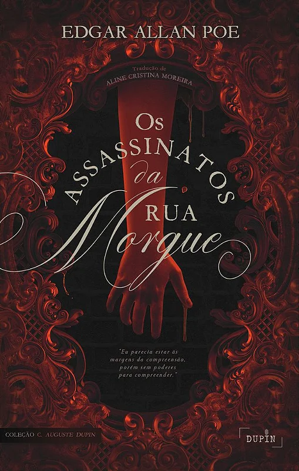
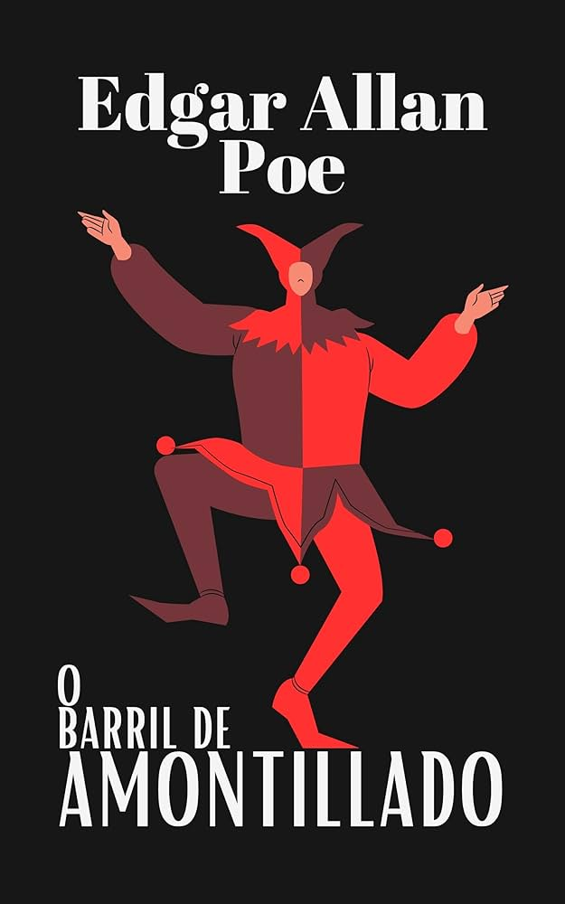

Catálogo de livros

Harry Potter - A Ordem da Fênix
J. K. Rowling
Harry passa por dificuldades em Hogwarts, com a chegada de Dolores Umbridge, uma professora designada pelo Ministério da Magia para vigiar Dumbledore e o próprio Harry. Harry forma a Armada de Dumbledore com seus amigos para aprender Defesa Contra as Artes das Trevas, pois o Ministério nega o retorno de Voldemort.

Moby Dick
Herman Melville
A história de Moby Dick, romance de Herman Melville, gira em torno da obsessão do capitão Ahab, do navio baleeiro Pequod, em caçar e matar a baleia branca gigante que lhe arrancou uma perna em uma expedição anterior. A narrativa acompanha a jornada do navio e sua tripulação multiétnica pelo Oceano Pacífico, explorando temas como vingança, destino, a natureza humana e a relação do homem com o mar e com as forças da natureza.

Orgulho e Preconceito
Jane Austen
A história de Orgulho e Preconceito gira em torno das cinco irmãs Bennet, que viviam na área rural do interior da Inglaterra, no século XVIII. Aborda a questão da sucessão em uma família sem herdeiros homens, dentro de uma sociedade patriarcal, onde o casamento era fundamental para as mulheres.

Jogos Vorazes
Suzanne Collins
Quando Katniss Everdeen, de 16 anos, decide participar dos Jogos Vorazes para poupar a irmã mais nova, causando grande comoção no país, ela sabe que essa pode ser a sua sentença de morte. Mas a jovem usa toda a sua habilidade de caça e sobrevivência ao ar livre para se manter viva.

Anne of Green Gables
L. M. Montgomery
A história acompanha Anne Shirley, uma órfã de 13 anos que é enviada por engano para viver com os irmãos Marilla e Matthew Cuthbert em Green Gables, uma fazenda em Avonlea. Ao invés de um menino, como eles esperavam, Anne chega com seus cabelos ruivos, olhos verdes e uma imaginação fértil, pronta para transformar suas vidas e a de todos ao seu redor.

O Corvo
Edgar Allan Poe
O enredo versa sobre os delírios de um homem após a morte de sua amada, Lenora, e trata sobre a dor da perda, a falta de esperança e a angústia da existência.

O Coração Revelador
Edgar Allan Poe
É um conto de terror psicológico narrado em primeira pessoa por um indivíduo perturbado que assassina um homem idoso por causa de seu "olho de abutre". O narrador tenta convencer o leitor de sua sanidade, mas suas ações e a crescente paranoia o levam a confessar o crime.

O Gato Preto
Edgar Allan Poe
Conto que narra a história de um homem inicialmente apaixonado por animais, que gradualmente se torna um alcoólatra e desenvolve um comportamento violento, especialmente em relação ao seu gato preto, Plutão. Após cegar o gato e depois enforcá-lo, ele se arrepende, mas um novo gato preto, muito parecido com Plutão, surge, atormentando-o ainda mais.

Os Assassinatos da Rua Morgue
Edgar Allan Poe
Em “Os Assassinatos da Rua Morgue”, mãe e filha são assassinadas em um apartamento fechado, sem qualquer sinal de arrombamento. Depois de ouvir gritos estridentes, vizinhos entram e saem da cena do crime, cada um com uma especulação diferente sobre quem teria sido o assassino.

O Barril de Amontillado
Edgar Allan Poe
É uma história de vingança em que Montresor, movido por um insulto não especificado, atrai seu "amigo" Fortunato para as catacumbas de sua família durante o carnaval. Lá, Montresor acorrenta Fortunato em uma nicho e o empareda vivo, consumando sua vingança. A narrativa é marcada pela ironia, suspense e exploração da natureza humana, com Montresor se aproveitando da vaidade e do amor de Fortunato por vinho para executar seu plano maquiavélico.